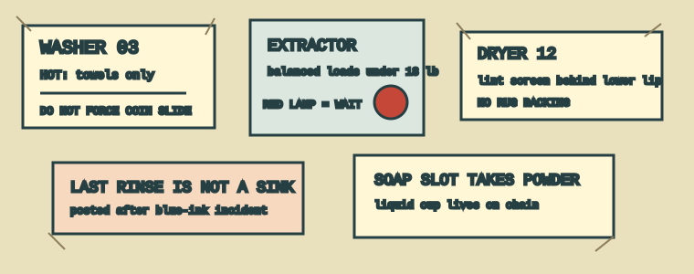
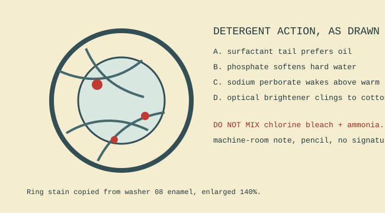
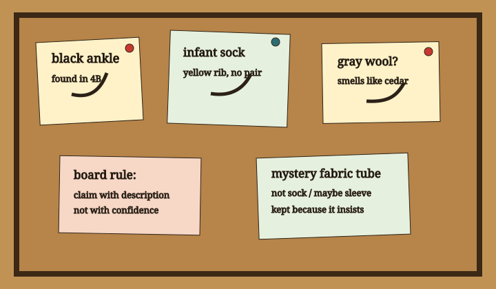
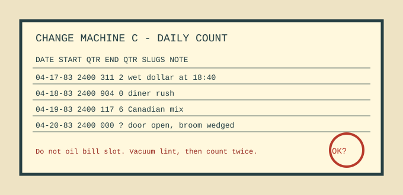
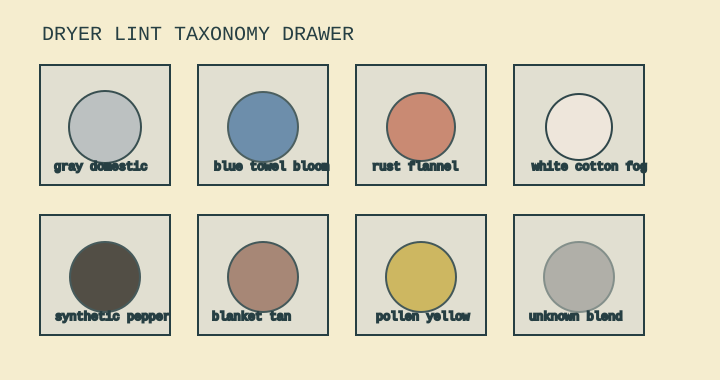

foreversite / laundromat register
North wall coin laundromat: placards, powders, boards, and lint
This section files the readable surfaces of a small laundromat: machine warnings, detergent chemistry notes, the lost sock board, change machine counts, and the dryer's collected evidence. Everything here is paper, enamel, cork, lint, or hand-lettered plastic.
Site note: glass door faces east. Fluorescent pair over folding table flickers every 41 seconds. Wall clock runs fast when the extractor spins.

Machine placard bank
Posted rules copied from washer lids, coin slides, soap trays, and one dryer with a scorched rug warning.

Detergent chemistry shelf
Surfactant sketches, alkaline builders, bleach cautions, and why bluing makes white cloth tell a small optical lie.

Lost sock board
Corkboard claims arranged by fiber, size, dampness, and how long hope remains reasonable.

Change machine logs
Quarter counts, wet-dollar failures, slugs, reset times, and the small accounting rituals of a coin room.

Dryer lint taxonomy
Eight observed lint types sorted by color, probable origin, screen behavior, and whether they arrive with paper matches.